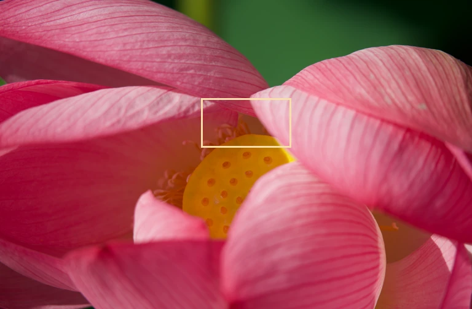
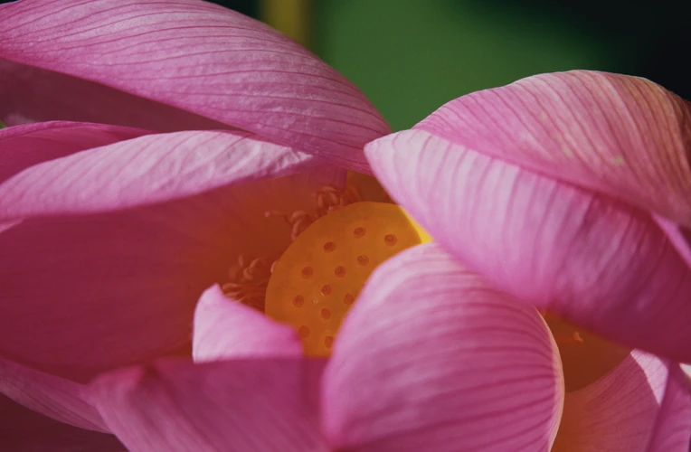
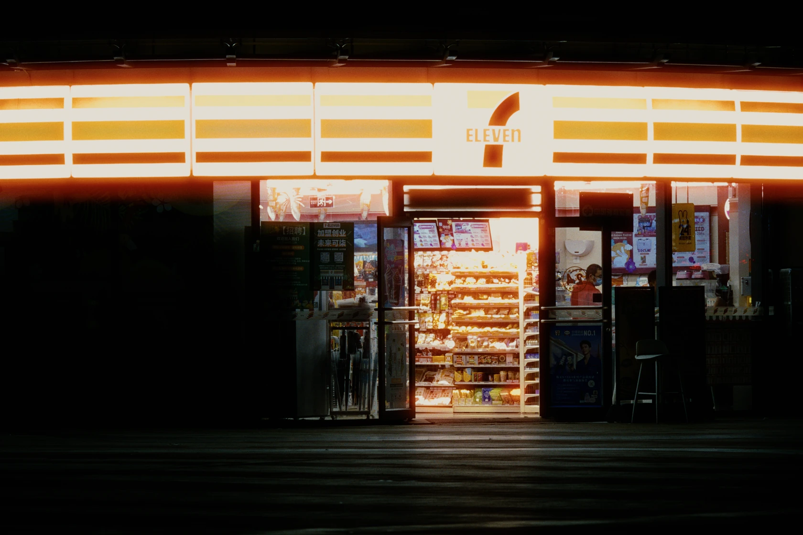

SILVERPHASE DARKROOM NOTES
Comparison lab
See how one image changes, then isolate which stage changed it. Every simulated print here is a real Silverphase render, not a scan of a physical print.
CONTROLLED COMPARISON
One lotus, three references.
Choose either side. Start with RAW versus film for the overall change, then compare the two papers. The detail view uses matching coordinates.


Methods and limits
The RAW reference is Apple’s decode with no simulation. The prints share a cached Portra 400 negative, with +0.67 EV from metered film exposure and a print exposure setting of 0.88. Each paper uses its built-in neutral calibration. Grain and halation remain enabled. Detail samples are from matching coordinates in the 4096 px-wide renders.

BLACK-AND-WHITE PRINT · CONTROLLED COMPARISON
One black-and-white negative. Two paper grades.
Look around the eye, the feather shadows and the background. Grade 00 keeps the transitions softer; grade 4 opens up stronger separation. Both keep grain and halation, with no sample boxes on the full image.


Paper grade, filtration and exposure compensation
Same simulated Acros II negative, Ilford Multigrade IV RC paper, TH-KG3 enlarger illuminant and +0.33 EV film exposure. Switching the grade applies Silverphase’s built-in filtration and mid-gray exposure compensation, so the effective print exposure is not equal. The second print reuses the same cached negative.
TEXTURE STUDY
One night frame, two details.
Two regions of the same 800T rendering, not an effect-on/effect-off test. Follow the orange-red glow at the sign, then look at grain on the illuminated pavement.


CineStill 800T / Kodak Vision 2383 · 35 mm · 1× grain · stock halation enabled; 7008 × 4672 render.

SEPARATE RECIPES
Match a stock to the light.
These are different scenes with independent recipes, not a controlled stock test.

Portra 400
Portra Endura

Acros II
Ilford Multigrade IV RC

CineStill 800T
Kodak Vision 2383
Open the complete stock plate · Open the 135 strip and covers